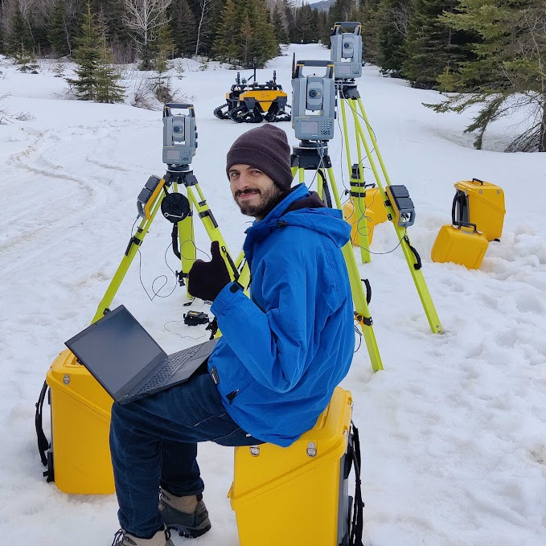

|
Damien LaRocque I'm a robotics engineer at Sereact in Stuttgart, Germany, where I work at the intersection of robotics, robot learning, and software engineering. I received my master's degree from Université Laval, where I was supervised by Prof. François Pomerleau and Prof. Philippe Giguère. My research focused on developing terrain awareness using proprioceptive sensor data from rovers driving autonomously in forests and winter conditions. During my studies, I've had the valuable opportunity to intern at the Laboratoire de robotique de l'Université Laval, where I worked with Prof. Clément Gosselin. Before joining Université Laval, I did research assistantships at Université de Moncton under the supervision of Prof. Yassine Bouslimani, where I worked on IoT, Deep Learning, and Computer vision projects. I completed my bachelor's degree in Electrical Engineering from Université de Moncton, NB, Canada. |
 |
ResearchI'm interested in applications of robot learning and learning-based methods for mobile manipulator navigation and for navigation in harsh terrains. |


{kind=link}
|
Design and source code from Jon Barron's website. |